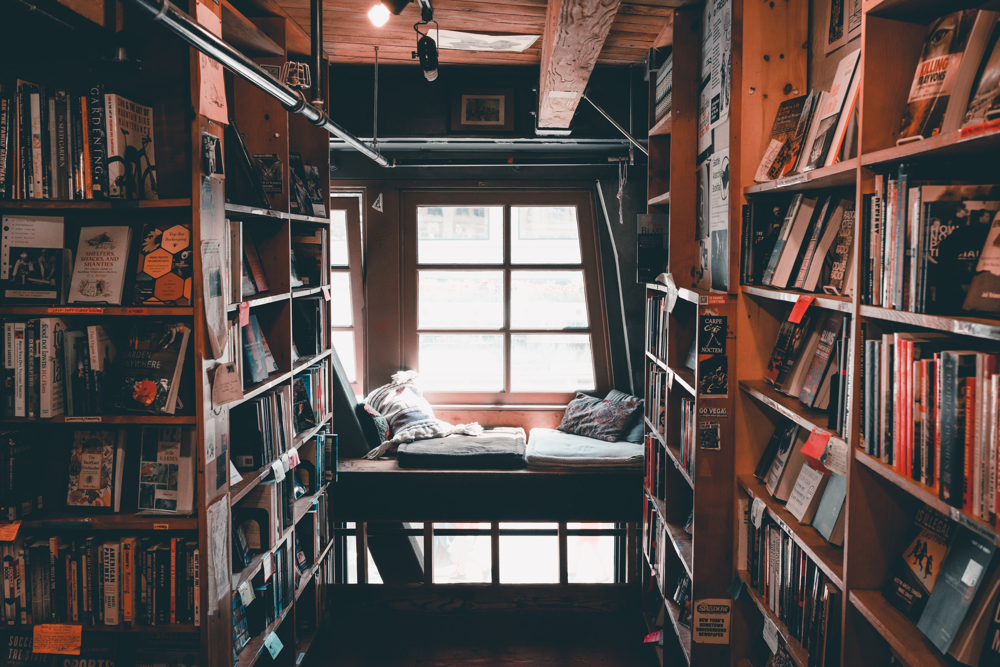
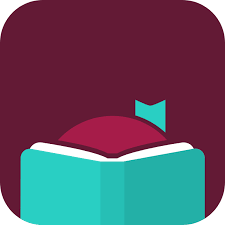
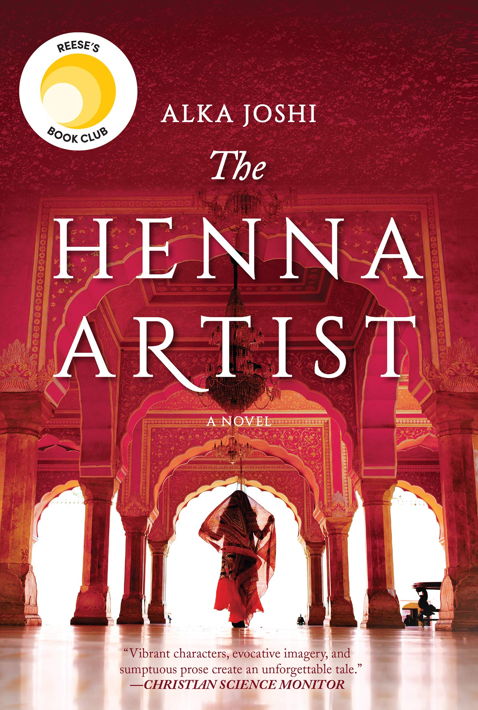
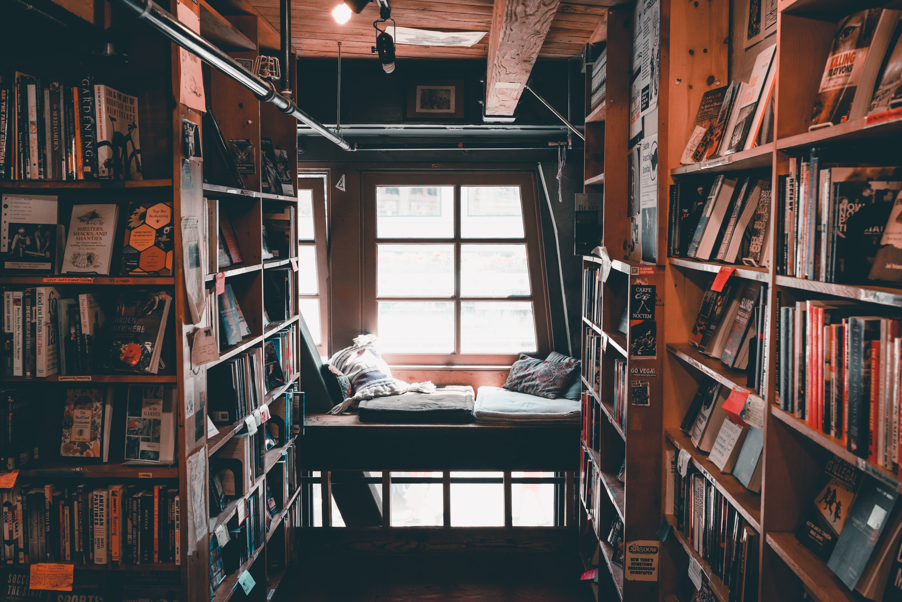
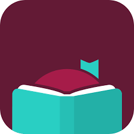
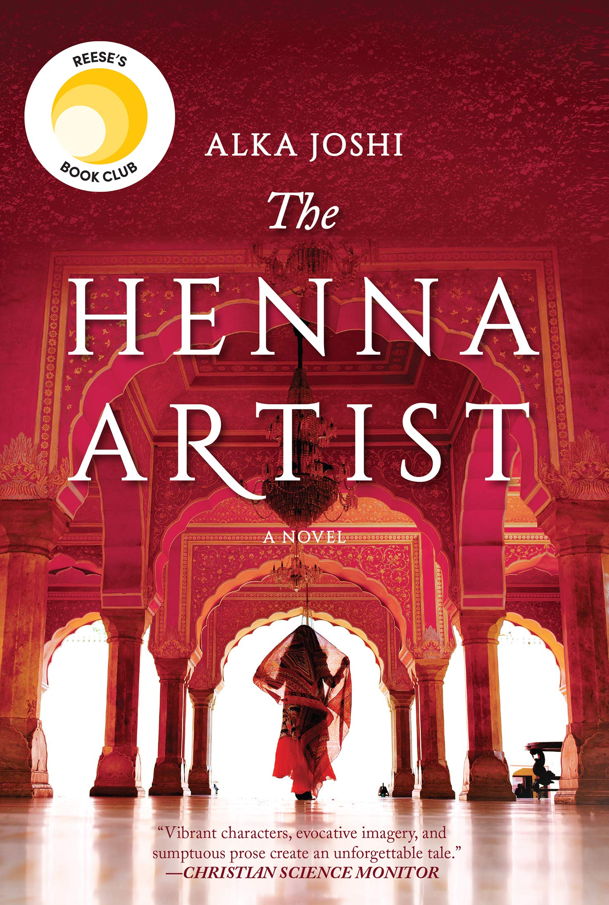

Intrested in getting into reading yourself? Or already love books but can't seem
to find the time to spend reading them? No worries at all, you're in the right
place! I have certainly been in the latter position myself, and have found some
handy tips and tricks to not only get myself out of a reading slump, but to make
time for myself to enjoy books even when I am incredibly busy (which I often
am as a grad student)!
 Invest in an e-Reader
Invest in an e-Reader
 In our digital age, nothing beats the ease and convenience of an e-Reader, and
investing in one can put you on the path to success in your reading journey!
Not only do e-Readers involve a financial investment, which makes you more likely
to actually keep up with your reading to make use of your investment, these devices
are also incredibly easy to carry around, so you can read anywhere from the bus
to a dentist waiting room.
Audiobooks are your Best Friend!
If you don't love sitting in one place and having to physically read a book, then
audiobooks are a great way to enjoy books! Even as someone who has always loved
physical books or the act of physically reading, audiobooks are so nice to listen
to as I go around the house completing chores or while making the commute to school
or work.
Take Advantage of yout Local Library
In our digital age, nothing beats the ease and convenience of an e-Reader, and
investing in one can put you on the path to success in your reading journey!
Not only do e-Readers involve a financial investment, which makes you more likely
to actually keep up with your reading to make use of your investment, these devices
are also incredibly easy to carry around, so you can read anywhere from the bus
to a dentist waiting room.
Audiobooks are your Best Friend!
If you don't love sitting in one place and having to physically read a book, then
audiobooks are a great way to enjoy books! Even as someone who has always loved
physical books or the act of physically reading, audiobooks are so nice to listen
to as I go around the house completing chores or while making the commute to school
or work.
Take Advantage of yout Local Library
 





 Happy Reading!
Happy Reading!